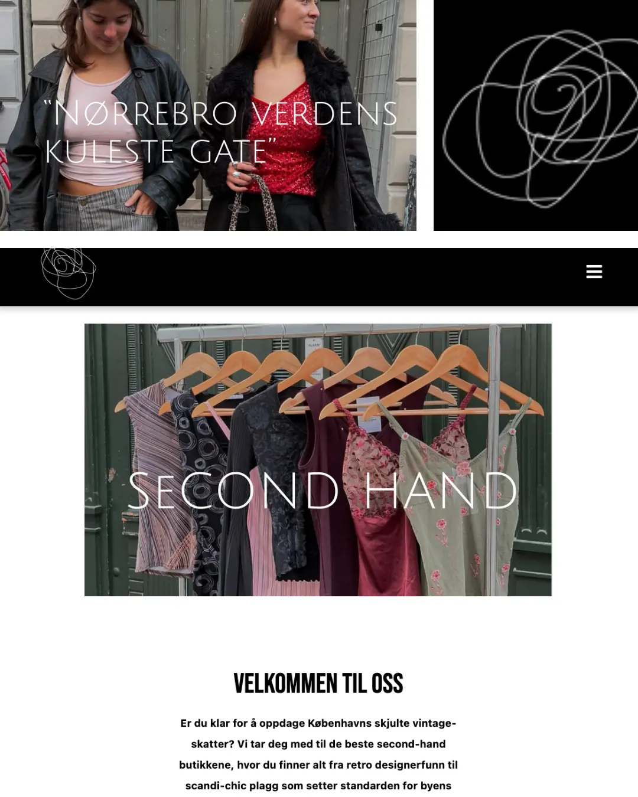

Grunnleggende UX
I dette tema lærte jeg å utvikle idé og innhold til et website. Hvordan man laget digitale prototyper, wireframes og stilark i Figma. Samt dokumentere løsningen gjennom brukertest og prosessbeskrivelser.

I dette tema lærte jeg å utvikle idé og innhold til et website. Hvordan man laget digitale prototyper, wireframes og stilark i Figma. Samt dokumentere løsningen gjennom brukertest og prosessbeskrivelser.